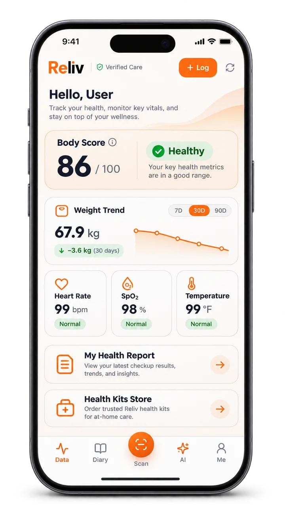
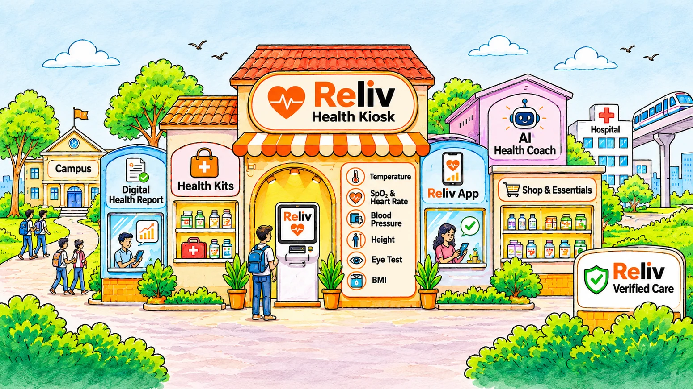

Make it yours.
Choose English, Hindi, or Bengali and follow the kiosk’s guided instructions.

A moment for you.
A clearer picture of your health.
Right where life happens.
YOUR EVERYDAY HEALTH CHECK
Life moves fast. Checking in with your health should fit right in. Meet the self-service kiosk bringing everyday health screening closer to your campus, workplace, and community.
The story behind Reliv ↗Scroll to explore. Select a check to stay a little longer.
Start with the basics. Height and weight provide the inputs for your body mass index.
MEASUREMENT + CALCULATIONChoose English, Hindi, or Bengali and follow the kiosk’s guided instructions.
Complete the available checks. See your measured vitals on screen for free.
Choose an optional paid digital report. Follow the kiosk’s payment and access instructions.

ILLUSTRATIVE APP PREVIEWKeep your health story close with Reliv’s companion web app. Bring your measurements with you and build a habit of checking in.
Payment QR → checkout and a kiosk activation code.
Health QR → import your measurements directly.
From a campus morning to a busy workday. Explore where Reliv could fit into your community.
A check-in between classes.
↗02Make wellbeing part of the day.
↗03More context for your fitness journey.
↗
Our pilot at IEM Gurukul brings accessible health screening into everyday campus life.
Explore the pilot location ↗Campus illustration · see location page for visit details.Available checks include blood pressure, oxygen saturation and pulse, temperature, height, weight, and calculated BMI. An optional eyesight screening may be available. Features depend on the kiosk configuration.
Vitals are shown on the kiosk screen for free. A digital report is optional and paid. Check the price displayed at your kiosk before paying.
No. Reliv provides screening information, not a medical diagnosis. Discuss concerning readings or symptoms with a qualified healthcare professional.
Yes. Talk with our team about your venue, expected usage, and purchase, lease, or revenue-share options. Start a conversation ↗